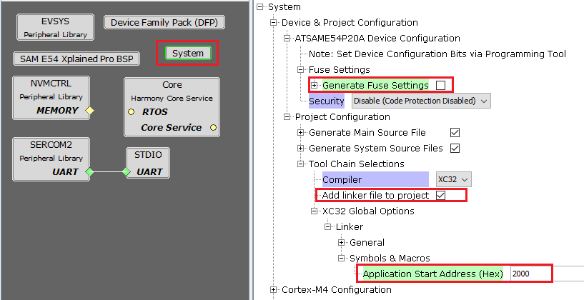

Configuring a SAM based Application to be bootloaded
Application Settings in MHC System Configuration
- Launch MHC for the application project to be configured
-
Select system component from the project graph and configure the below highlighted settings

- Disable Fuse Settings:
- Fuse settings needs to be disabled for the application which will be boot-loaded as the fuse settings are supposed to be programmed through programming tool from bootloader code
- Also the fuse settings are not programmable through firmware
- Enabling the fuse settings also increases the size of the binary when generated through the hex file
- When updating the bootloader itself, make sure that the fuse settings for the bootloader application are also disabled
- Specify the Application Start Address:
- Specify the Start address from where the application will run under the Application Start Address (Hex) option in System block in MHC.
- This value should be equal to or greater than the bootloader size and must be aligned to the erase unit size on that device.
- As this value will be used by bootloader to Jump to application at device reset it should match the value provided to bootloader code
- The Application Start Address (Hex) will be used to generate XC32 compiler settings to place the code at intended address
- After the project is regenerated, the ROM_ORIGIN and ROM_LENGTH are the XC32 linker variables which will be overridden with value provided for Application Start Address (Hex) and can be verified under Options for xc32-ld in Project Properties in MPLABX IDE as shown below.

MPLAB X Settings
-
Specifying post build option to automatically generate the binary file from hex file once the build is complete
${MP_CC_DIR}/xc32-objcopy -I ihex -O binary ${DISTDIR}/${PROJECTNAME}.${IMAGE_TYPE}.hex ${DISTDIR}/${PROJECTNAME}.${IMAGE_TYPE}.bin
Additional settings (Optional)
- RAM_ORIGIN and RAM_LENGTH values should be provided for reserving configured bytes of start of RAM to trigger bootloader from firmware
- Under Project Properties, expand options for xc32-ld and define the values for RAM_ORIGIN and RAM_LENGTH under Additional options
-
This is optional and can be ignored if not required